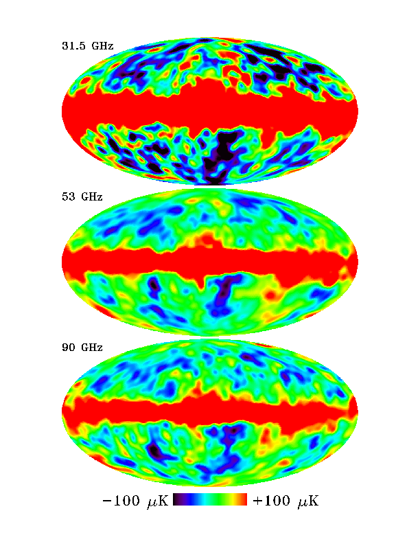

Ci chiediamo: qual è la dimensione tipica r_g dei grani di polvere?
Se r_g \gg \lambda, vale l’ottica geometrica, e A(\lambda) è costante;
Se r_g \ll \lambda, allora \sigma \sim 0 e dunque A(\lambda) è piccolo e costante;
Se r_g \sim \lambda, allora la diffrazione è importante, e A(\lambda) dipende fortemente da \lambda.
Polvere nel ISM: dimensione dei grani
Esistono due tipi di grani di polvere:
Grani grossi (µm–mm) generano uno spettro IR. Si osservano strutture spettrali a ~1÷10 µm, indicative di silicati (SiO, SiO₂) e ghiaccio (H₂O);
Grani piccoli (1–10 nm) generano estinzione in UV, e sono aggregati di ~100 atomi (idrocarburi, carbonio, grafite).
Polvere nel ISM: composizione
B. Draine, Physics of the interstellar and galactic medium, Princeton University Press (2011).
Forma dei grani di polvere
Indicazioni sulla forma dei grani vengono da misure di polarizzazione.
La luce delle stelle che attraversa lo ISM è polarizzata. Si suppone che questo dipenda dalla forma dei grani nel ISM, perché HI, HII ed He hanno simmetria sferica e non possono indurre polarizzazione.
La polarizzazione della luce di stelle sul piano galattico è maggiore se tra noi e la stella sono presenti polveri.
La polarizzazione della luce stellare sul piano galattico ha il campo \vec Eparallelo al piano.
Se supponiamo che le stelle del piano emettano luce non polarizzata, questo vuol dire che i grani di polvere assorbono preferenzialmente la polarizzazione perpendicolare al piano galattico.
La forma più probabile dei grani è un ellissoide. In questo modo gli elettroni sono liberi di rispondere al campo \vec E esterno più in alcune direzioni che in altre.
Osservazioni sulla polarizzazione
Livello medio di polarizzazione: 1\,\%\div2\,\%;
Debole dipendenza da \lambda;
Dipendenza da A_V:
Se A_V è piccolo, la polarizzazione è sempre bassa;
Se A_V è grande, la polarizzazione può essere qualunque.
(Di conseguenza, la presenza di polvere è necessaria ma non sufficiente per avere polarizzazione).
Carica elettrica dei grani
L’interazione dei grani con campi elettromagnetici indica che non sono elettricamente neutri (ma globalmente ISM sì!).
Ci sono due meccanismi che permettono di accumulare carica sui grani:
Elettroni liberi «lenti» si fissano sulla superficie del grano;
Effetto fotoelettrico causato da fotoni UV (poco importante se A_V è grande, perché in tal caso la polvere scherma i fotoni).
Consideriamo il primo caso.
Carica elettrica dei grani
Per fissarsi al grano, l’energia cinetica dell’elettrone deve essere maggiore del potenziale Coulombiano del grano (con r_g circa 1µm). In questo caso, T è la temperatura della nube di grani.
Carica elettrica dei grani
Il conto non è molto diverso da quello del raggio collisionale per gli ammassi globulari: studiamo quando l’energia potenziale è uguale all’energia cinetica.
\begin{aligned}
\frac{N e^2}{4\pi\epsilon_0 r_g} &= \frac32 k_B T,\quad\text{da cui} \\
N &= 6\pi\epsilon_0 k_B T \frac{r_g}{e^2} \approx 1.
\end{aligned}
Ma la coda ad alta velocità nella distribuzione di Boltzmann per gli e liberi porta a N \sim 10.
Temperatura dei grani
Stimiamo ora la temperatura media del singolo grano di polvere. Possiamo supporre che essi siano scaldati da stelle vicine.
Supponiamo che un grano sia a una distanza d da una stella con raggio R e temperatura T, e che la luminosità della stella sia
L = 4\pi R^2 \sigma T^4
(corpo nero a simmetria sferica).
Temperatura dei grani
La frazione di potenza che colpisce il grano è
f = \frac{\pi r^2_g}{4\pi d^2} = \frac14\,\left(\frac{r_g}{d}\right)^2.
Se il grano ha albedo a, assorbe una potenza
P_\text{abs} = f\,L\,(1 - a) = (1 - a) r_g^2 \sigma T^4 \left(\frac{\pi R^2}{d^2}\right),
dove \pi R^2/d^2 \equiv \Omega_* è l’angolo solido della stella visto dal grano.
Temperatura dei grani
Per calcolare la temperatura del grano all’equilibrio termico, dobbiamo considerare anche la potenza rilasciata dal grano:
P_\text{rad} = 4\pi r_g^2 \sigma T_g^4,
dove usiamo la cosiddetta temperatura effettivaT_g, ossia la temperatura di un corpo nero che emetterebbe la stessa quantità di energia del grano.
Temperatura dei grani
Se la polvere ha raggiunto la temperatura T_g di equilibrio, la potenza emessa deve uguagliare quella assorbita:
\begin{aligned}
P_\text{rad} &= P_\text{abs} \\
4\pi r_g^2 \sigma T_g^4 &= (1 - a) r_g^2 \sigma T^4
\left(\frac{\pi R^2}{d^2}\right) \\
T_g &= T (1 - a)^{1/4} \sqrt{\frac{R}{2d}}.
\end{aligned}
(Attenzione: il Kutner dà una spiegazione fisicamente sbagliata di questa relazione).
Temperatura dei grani
La formula
T_g = T (1 - a)^{1/4} \sqrt{\frac{R}{2d}}
mostra che la temperatura della polvere non dipende dalla dimensione dei grani.
Questa è la temperatura del singolo grano di polvere, ma possiamo assumere che all’equilibrio coincida con la temperatura della nube di grani.
Temperatura dei grani
Nelle regioni che mostrano formazione stellare, d/R \sim 10^3\div 10^4, e quindi T_g \sim 10^{-2} T_*.
Se T_* = 10\,000\,\text{K}, allora
T_g \sim 100\,\text{K}.
Dalla legge di Wien (\lambda_\text{max} T = 0.29\,\text{cm\,K}) si deduce che il picco dell’emissione è:
30 µm (IR) se T = 100\,\text{K};
0.3 mm (sub-mm) se T = 10\,\text{K}.
Struttura dei grani di polvere
I grani di polvere (a) possono collidere tra loro e aggregarsi in strutture più complesse (b).
Se il grano è paramagnetico, il campo Galattico \vec B_\text{Gal} induce un momento magnetico \vec \mu_B \propto \vec B_\text{Gal} parallelo a questo, che causa un momento meccanico \vec\tau = \vec\mu_B \times \vec B_\mathrm{Gal}. Allora:
Se il grano ruota come nel caso a della fig. precedente, la rotazione porta \vec B_\text{Gal} e \vec \mu_B a disallinearsi. Per riallinearsi, \vec \mu_B induce un momento torcente in opposizione.
Se l’asse di rotazione è parallelo a \vec B_\text{Gal}, non c’è momento torcente.
Quindi l’asse di rotazione tende ad allinearsi con \vec B_\text{Gal} (rilassamento paramagnetico).
Emissione anomala
Nel 1995, Kogut et al. pubblicarono un articolo in cui si misurava la correlazione tra l’emissione del cielo a 140 µm (misurata da COBE-DIRBE) e a 31.5,GHz (misurata da COBE-DMR).
Questi studi cercavano di caratterizzare il contributo relativo di diverse emissioni intorno alla regione delle microonde, in modo da isolare meglio il segnale della CMB (che vedremo meglio nell’ultima parte del corso).

(La correlazione si ha tra la mappa a 31.5 GHz e la mappa a 140 µm).
Tipi di emissione
Origine della correlazione
Il segnale di sincrotrone viene generato dai raggi cosmici, che non dovrebbero essere correlati con la polvere.
Eppure questo è ciò che si osserva! Tre possibilità:
La polvere emette anche alle frequenze del sincrotrone;
I raggi cosmici emettono anche alle frequenze della polvere;
Qualcos’altro (cosa?) emette sia alle frequenze del sincrotrone che della polvere.
Grani in rotazione
Una spiegazione proposta nel 1998 da A. Lazarian e B. T. Draine è che siano i grani degli idrocarburi aromatici policiclici (PAH) a emettere nella regione spettrale intorno ai 30,GHz, a causa della loro rotazione.
Il modello fisico è semplice, anche se i dettagli sono estremamente complicati!
Grani in rotazione
Supponiamo che i grani abbiano un momento elettrico di dipolo \vec \mu = q \vec r e che siano in rotazione con velocità angolare \omega
Ci aspettiamo allora che emettano fotoni con frequenza \nu = \omega/2\pi.
Se i grani sono in equilibrio termico, abbiano momento angolare L \gg h e siano messi in rotazione principalmente da urti, allora
\frac12 I \left<\omega^2\right> \approx \frac32 k_B T, \qquad
\text{con } I =
\frac25 M a^2 = \frac8{15} \pi \rho a^5.
(In realtà il 10–20,% dell’energia viene convertita in modi vibrazionali).
Avvertenze
L’ipotesi che tutta l’energia dell’urto sia convertita in energia rotazionale è un’approssimazione: in realtà si stima che parte dell’energia (10–20,%) venga convertita in modi vibrazionali.
L’ipotesi che il momento angolare L sia molto maggiore di h consente di usare la fisica classica, dove il momento angolare non è quantizzato: questo è sempre vero, perché i grani più piccoli hanno L/h \sim 70.}
Grani in rotazione
La soluzione si può scrivere in questa forma:
\begin{aligned}
\nu = \frac{\sqrt{\left<\omega^2\right>}}{2\pi} =
&32\,\text{GHz}\times\left(\frac{T}{100\,\text{K}}\right)^{1/2}\times \\
&\times\left(\frac{2\,\text{g/cm}^2}\rho\right)^{1/2}\times\left(\frac{5\,\text{\AA}}a\right)^{5/2}.
\end{aligned}
(Ci sono evidenze che dicono che solo i grani piccoli, con a \lesssim 10\,\text{\AA}, contribuiscono a questa emissione). Il fatto che il picco di emissione previsto sia intorno ai 30,GHz mostra che questa è la strada giusta!
(Vedi Fig. 7 di Draine & Lazarian (1998) per capire perché solo i grani piccoli contribuiscono alla AME).
Grani in rotazione
Per avere un modello realistico, bisogna anche tenere conto di altri effetti:
Collisioni con ioni (forze Coulombiane);
Accoppiamento tra \vec \mu e e il campo elettromagnetico;
Assorbimento/emissione di fotoni (a causa del loro momento angolare);
Formazione di H₂;
Etc.
Grani in rotazione
Un modello più dettagliato prevede che
\left<\omega^2\right> \lesssim 3 k_B \frac{T}I.
Il risultato è comunque che lo spettro previsto ha un picco di emissione intorno a qualche decina di GHz.
Ovviamente, i modelli dettagliati stimano anche l’intensità, in modo da paragonarla con quella misurata. (Un modello completo deve quindi tenere conto della superficie media dei grani, della loro emissività, della loro forma, etc.)